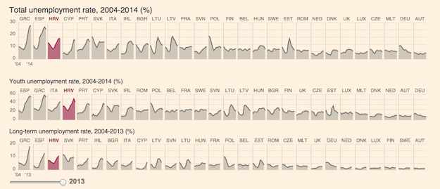
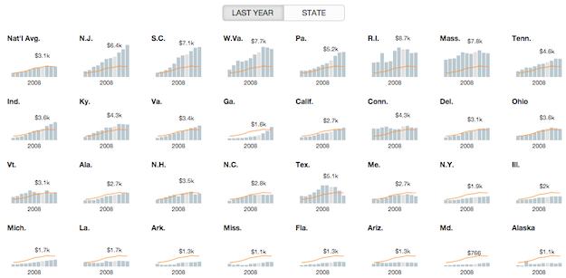

Small multiples should be a familiar visualization technique for most FlowingData readers. The key idea is to slice up your data and use a separate plot to visualize each slice. The end result is a grid of charts that all follow the same visual format, but show different pieces of the data.
Essentially, a chorus of little stories to help tell a bigger one.
While the concept is simple, the benefits can be significant. Compared to a single larger chart, small multiples can help with overplotting (pdf), (when data is obscured or occluded because there are too many items being plotted).
Compared to animation, small multiples present all of the data at once making it easier for viewers to naturally compare each facet with others, instead of trying to flip back and forth between views.
FlowingData has covered small multiples, and their uses, a few times already. We have used R to make small multiple bar charts and gridded maps. We have even seen an implementation of area charts that used D3 and provided some interactive capabilities in the form of filtering (which I'll get back to).
Tufte and Few have written pages and pages on small multiples - so I can write another tutorial, right??
But even with this content around small multiples, a visualization as versatile as this has plenty more to give. As Stephanie Evergreen points out, it can be the perfect way to declutter your data. And after you read this amazing compilation on wee things by Lena Groeger, you'll be excited about all the possibilities small multiples provide. So they are worth a revisit.
In this tutorial we are going to take another look at small multiples and explore the possibilities available to us when we layer on some interactions.
Specially, I'd like to talk about linked small multiples. Here, all the plots in the small multiple are connected in some way through how they respond to user interaction.
Before we get started, it might be valuable to look at some successful examples of linked small multiples to get a sense for what kind of interactions are possible, and how they are getting used.
Examples of Linked Small Multiple
And if you have a better name for one or more of these categories from the Vis or UI/UX world, please let me know!
I've broken down the domain of linked small multiples into four types of interactions. Mostly, this just allows me to make up silly names for the interactions (which probably already have real names anyways), but it also helps frame the conversation a bit.
- Updateable
- Sortable
- Highlightable
- Scrubbable
To clarify a bit, we are focusing on interactions that affect all or many of the small multiple plots at the same time, so tooltips don't count. But if you are interested in small multiples that are interactive at the individual chart level, check out my small multiples with details on demand tutorial for one such example.
Let's look at each type in turn.
Updateable
This is a common approach where the data is filtered or processed in some way, and then the small multiples are updated to reflect this new data. The FlowingData visualization How Americans Spend Their Day, that served as the demo for the last D3 small multiples tutorial, is updateable. The filters update the plots with different subsets of the data to provide a greater exploration experience.
Another Great example of an updateable small multiple is part of a GitHut, a visualization of programming language popularity on Github.
Here, you can toggle between repository count and percent of total for each language, providing both absolute and relative metrics to compare.

Sortable
With sortable small multiples, interactions cause the positions of the individual plots to move. Sorting in different ways allows the viewer to pick out different patterns in the data.
Still one of my favorite interactive small multiples, Jonathan Corum's always updating Kepler's Tally of Planets, allows the viewer to reorder by discovery date or system size. This gives the viewer a historical perspective, as well as one that highlights the incredible diversity in the systems.

Highlightable
Here, part or all of the visualization is highlighted to bring a visual element to the forefront for comparison, or connect the plots in some way.
In the Upshot's look at the American middle class, the team has created a wonderful small multiple to compare the US with other countries. You can mouse over one of the lines to highlight that country's data in each of the plots.
And recently, the Financial Times has provided an interesting twist on this idea in their EU unemployment tracker.
They show sets of small multiples for different metrics for each country, ordered by greatest to least for that metric. While this may break the purist form of small multiples, they also make the plots highlightable where that country's data is highlighted for each metric. With this format, you can easily read it worst to best (in terms of unemployment), but then also highlight a specific country to link the sections together. Nice!

Scrubbable
Maybe this one should just be called 'mouseable' - but scrubbable sounds so much cooler.
Now we're cooking with fire! Or at least interesting interactions. Scrubbable small multiples display the values of individual data points. You've seen this before in line charts and bar charts, but with a scrubbable small multiple, you get values in all your plots.
I first saw this in 2012 in the New York Times piece about America's Tax Burden, but now it's everywhere.
And that's high praise.
ProPublica's ambulance payout exposé uses this technique and was hailed for it by Junk Chart's Kaiser Fung.

And most recently, scrubbable small multiples were used to help explain the likelihood of unplanned pregnancies around different types of birth control. The visual provides great within-plot and between-plot comparisons with this approach.

Bonus: Brushable
I'm sure I missed more types of interactions. Have one and want to tell me? Just email it to me or write it in the comments.
I did find a demonstration from Mike Bostock of a scrubbable + highlightable interaction where points in a small multiples of scatter plots were selectable in two dimensions. However, while this type of 'brushable' interaction would certainly be useful in some situations, so far I haven't found it used in the wild.
Our Own Scrubbable Sortable Small Multiple
Ok, enough examples, let's get coding.
Many of these interactions could be used together to make even more interesting interactions, and that's what we are going to try in this tutorial. Let's start with a basic small multiples built in D3.js and then add in some of these interactions to see how they work.
You can download the code and follow along as we build up the visualization. It is again written in CoffeeScript, but I've also compiled it into JavaScript as part of the downloadable code - in case you don't want to give CoffeeScript a try.
If you have python installed (and if you are on a Mac or Linux box, you should have python by default), you can open up the code directory in your Terminal and run python's simple http server.
First, you are going to want to check the python version you have:
[sourcecode language="bash"]
python --version
[/sourcecode]
If it is python 2.x, you can run the web server with the command:
[sourcecode language="bash"]
# start web server with python 2
python -m SimpleHTTPServer
[/sourcecode]
If it is python 3.x, the syntax is a bit different:
[sourcecode language="bash"]
# start web server with python 3
python -m http.server
[/sourcecode]
Once you have the server running in the code's directory, you should be able to open up http://0.0.0.0:8000 in your web browser and see the visualization.
If anyone has problems with getting started on Windows, let me know.
If you are on a Windows machine, I'm terribly sorry for you. But, Jerome Cukier should have you covered with his Getting to Hello World with d3 post.
The Data
Don't get me wrong - I love S.O. but the rule system can be a bit of a downer.
Ask MetaFilter may not be the most well known question-based forums on the web, but to my knowledge, it is one of the oldest that is still ticking. It has a structure similar to Stack Overflow or Quora, but without the regulations or pretensions of either. I've got a soft spot for Ask MetaFilter. It is one of the few websites I can still remember perusing for fun back in college just to discover something new (I guess my chosen coursework was insufficient for knowledge acquisition. I probably should have taken more challenging coursework).
Recently, a very honest article appeared on Medium about the uncertain future of MetaFilter. While a bit sad, it got me wondering if people still use Ask MetaFilter today, and how interaction with the site has changed over the years.
When I found that they offered a post data dump, I decided to check it out.
We will be using this data to create small multiples of posts over time. Each plot will display a different category of posts. Post counts are aggregated by year. I've included a primitive R script that I used to perform the data manipulation in the tools directory of the source code. This script also switches the category numbers to names using the category id mapping on their wiki page.
Let's get started!
Loading and Transforming
First, the easiest part of any D3 project - loading the data. Well, the loading part is easy, but sometimes getting it into the format you want after you load it can be a bit of a pain.
We are going to load the data with Mike Bostock's queue library, which makes it easy if we need to load multiple datasets in at one time. Its a bit overkill here, but useful to know about.
[sourcecode language="javascript"]
queue()
.defer(d3.tsv, "data/askmefi_category_year.tsv")
.await(display)
[/sourcecode]
See, easy. Right? This will call the display function once the data is loaded. Inside display, we will call transformData and then send the data up to be visualized. The transformData function uses d3.nest to group the data by category.
[sourcecode language="javascript"]
# ---
# Convert the raw input data into the format
# that our visualization expects.
# ---
transformData = (rawData) ->
format = d3.time.format("%Y")
rawData.forEach (d) ->
d.date = format.parse(d.year)
d.n = +d.n
nest = d3.nest()
.key((d) -> d.category)
.sortValues((a,b) -> d3.ascending(a.date, b.date))
.entries(rawData)
nest
[/sourcecode]
The important thing to remember about the output from nest is that it is... well nested. Our original data looks something like this:
[sourcecode language="bash"]
"year" "category" "n"
"2004" "clothing, beauty, & fashion" 141
"2004" "computers & internet" 2489
"2004" "education" 151
"2005" "clothing, beauty, & fashion" 203
"2005" "computers & internet" 2200
"2005" "education" 201
"2005" "food & drink" 324
"2005" "grab bag" 248
"2005" "health & fitness" 590
[/sourcecode]
The nesting transformation makes it look something like:
[sourcecode language="javascript"]
[
{"key":"clothing, beauty, & fashion",
"values":
[{"year":"2004", "n":141, "date":"2004-01-01"},{"year":"2005", "n":203, "date":"2005-01-01"},...]
},
{"key":"computers & internet",
"values":
[{"year":"2004", "n":2489, "date":"2004-01-01"},{"year":"2005", "n":2200, "date":"2005-01-01"},...]
},
...
]
[/sourcecode]
Each nested entry has a key (our categories), and an array of values (our counts per year).
I sometimes find it confusing to remember in D3 if in a particular function I'm working with the outer data element, or the inner nested one.
c for 'category', d for 'data'. Or just c comes before d and so d data is nested inside c.
To help clear up the confusion (I hope) I've used the variable c when we are looking at an outer category level data, and d when we are dealing with an element inside of values.
A Multitude of Small SVGs
To create small multiples with D3 you have two options for how to organize the plots. We can shove all the plots into a single SVG element, or we can create a new SVG for each plot. This tutorial opts for the later. Using a separate SVG per plot let's us use CSS for layout and positioning, and allows us to deal with responsive layouts more easily. It also is the method employed by most of the examples I looked at.
To make these, first we bind the data to a div selection, and then create a SVG element inside of the div for each element in our data array. We are going to also create a rectangle inside the SVG elements that will be used to capture mouse events.
[sourcecode language="javascript"]
# variables accessible to
# the rest of the functions inside SmallMultiples
width = 150
height = 120
margin = {top: 15, right: 10, bottom: 40, left: 35}
data = []
# ...
chart = (selection) ->
selection.each (rawData) ->
# Set local variable for input data.
# Transformation of this data has already
# been done by the time it reaches chart.
data = rawData
# Create a div and an SVG element for each element in
# our data array. Note that data is a nested array
# with each element containing another array of 'values'
div = d3.select(this).selectAll(".chart").data(data)
div.enter().append("div").attr("class", "chart")
.append("svg").append("g")
svg = div.select("svg")
.attr("width", width + margin.left + margin.right )
.attr("height", height + margin.top + margin.bottom )
g = svg.select("g")
.attr("transform", "translate(#{margin.left},#{margin.top})")
# Invisible background rectangle that will
# capture all our mouse movements
g.append("rect")
.attr("class", "background")
.style("pointer-events", "all")
.attr("width", width + margin.right )
.attr("height", height)
[/sourcecode]
The div element's are bound to data, so each div and SVG combo will be bound to a categories data.
Though it might not make sense to create 1000's of plots. I'm just saying it could be done easily.
It seems almost trivial, in terms of the amount of code written, but this combination of nested data and D3's succinct but powerful data binding concepts allow us to produce a thousand plots (or in this case just 20) with the same amount of code as it would take to make just one.
To get these plots to sit next to one another, we need to add a bit of CSS to have the .chart divs float to the left:
[sourcecode language="css"]
.chart {
float: left;
padding-right: 5px;
padding-bottom: 5px;
padding-top:0;
padding-left:0;
}
[/sourcecode]
With just this bit of code, we should start to see something. Because we haven't styled our background rectangle, they should appear black:
Ugly, but we are on the right track. A separate spot for each chart is ready and waiting. We just have to visualize the details. But first, we should hide that background rectangle:
[sourcecode language="css"]
.background {
fill: none;
}
[/sourcecode]
Lines and Titles
Before we turn to the interactions, we first need to get the visualization looking good. Using d3.svg.line() and d3.svg.area() to make some nice looking area charts. First, define these generators as well as the scales they will be using to build the paths.
[sourcecode language="javascript"]
# These accessor functions are defined to
# indicate the data attributes used for the
# x and y values. This makes it easier to
# swap in your own data!
xValue = (d) -> d.date
yValue = (d) -> d.n
# back at the top of the function...
xScale = d3.time.scale().range([0,width])
yScale = d3.scale.linear().range([height,0])
area = d3.svg.area()
.x((d) -> xScale(xValue(d)))
.y0(height)
.y1((d) -> yScale(yValue(d)))
line = d3.svg.line()
.x((d) -> xScale(xValue(d)))
.y((d) -> yScale(yValue(d)))
[/sourcecode]
As mentioned above, these functions will be working with elements inside of the nested values array, and so I've used d as the variable name to try to indicate that.
For these scales to work, we have to set their input domains. For the xScale, we can just use the min and max dates. For the yScale, I've bumped up the maximum y value a bit, so the tallest chart doesn't hit the top of the area. Here is the function that is used to set these domains.
[sourcecode language="javascript"]
# ---
# Sets the domain for our x and y scales.
# We want all the small multiples to have the
# same domains, so we only have to do this once.
# ---
setupScales = (data) ->
maxY = d3.max(data, (c) -> d3.max(c.values, (d) -> yValue(d)))
maxY = maxY + (maxY * 1/4)
yScale.domain([0,maxY])
extentX = d3.extent(data[0].values, (d) -> xValue(d))
xScale.domain(extentX)
[/sourcecode]
Inside of our chart 'constructor' function, we can use these generators to make paths for each plot:
[sourcecode language="javascript"]
chart = (selection) ->
selection.each (rawData) ->
data = rawData
setupScales(data)
# further on down ...
lines = g.append("g")
lines.append("path")
.attr("class", "area")
.style("pointer-events", "none")
.attr("d", (c) -> area(c.values))
lines.append("path")
.attr("class", "line")
.style("pointer-events", "none")
.attr("d", (c) -> line(c.values))
[/sourcecode]
And again, our SVG elements each are bound to a specific category level entry. So I've used c to indicate that.
You could also put this pointer-event style in the CSS for these elements.
The pointer-events: none prevent these elements from grabbing mouse events that I want to hit the background rectangle. There are probably other ways to do this (like draw the rectangle on top of the other elements), but I don't mind being explicit about who should see what when it comes to user interactions.
While we are here, we can add a category name label, as well as the start and end year labels.
[sourcecode language="javascript"]
lines.append("text")
.attr("class", "title")
.attr("text-anchor", "middle")
.attr("y", height)
.attr("dy", margin.bottom / 2 + 5)
.attr("x", width / 2)
.text((c) -> c.key)
lines.append("text")
.attr("class", "static_year")
.attr("text-anchor", "start")
.style("pointer-events", "none")
.attr("dy", 13)
.attr("y", height)
.attr("x", 0)
.text((c) -> xValue(c.values[0]).getFullYear())
lines.append("text")
.attr("class", "static_year")
.attr("text-anchor", "end")
.style("pointer-events", "none")
.attr("dy", 13)
.attr("y", height)
.attr("x", width)
.text((c) -> xValue(c.values[c.values.length - 1]).getFullYear())
[/sourcecode]
A bit of CSS and our visualization comes to life!
[sourcecode language="css"]
svg {
font-size: 10px;
}
.area {
fill: #cec6b9;
}
.line {
fill: none;
stroke: #74736c;
stroke-width: 1.4px;
}
.title {
font-size: 12px;
}
[/sourcecode]
An Axis for Each Multiple
We've opted for a casual labeling of the year along the x axis, but what about the y? Let's get an axis in there too! Up top, define an axis generator to use.
[sourcecode language="javascript"]
yAxis = d3.svg.axis()
.scale(yScale)
.orient("left").ticks(4)
.outerTickSize(0)
.tickSubdivide(1)
.tickSize(-width)
[/sourcecode]
Using a tickSize of -width is a fun hack to allow the tick lines to span across the plots, the way the Upshot likes to do.
Now we just call the axis generator on a new div at the end of the constructor:
[sourcecode language="javascript"]
g.append("g")
.attr("class", "y axis")
.call(yAxis)
[/sourcecode]
Couldn't be easier.
Scrubbing Our Interactions
So far, we have been following in the footsteps of the previous interactive small multiples. While valuable in itself, as D3.js has grown and changed since then, now it is time to get some linked interactions going!
The visual elements that will change as the user scrubs over a plot are a circle, a year label, and a value label. As there is one of each for each plot, we can add them in the constructor.
[sourcecode language="javascript"]
circle = lines.append("circle")
.attr("r", 2.2)
.attr("opacity", 0)
.style("pointer-events", "none")
caption = lines.append("text")
.attr("class", "caption")
.attr("text-anchor", "middle")
.style("pointer-events", "none")
.attr("dy", -8)
curYear = lines.append("text")
.attr("class", "year")
.attr("text-anchor", "middle")
.style("pointer-events", "none")
.attr("dy", 13)
.attr("y", height)
[/sourcecode]
The circle has a opacity of 0, and the two text elements have no text, keeping them out of sight.
As we create these elements, we can also assign the attributes that won't change during the interactions. This includes the radius for the circle, and the y position for the year text.
The three variables circle, caption, and curYear are created outside of the constructor's scope so that they will be accessible to other functions. Specifically, the mouse-related functions that will be called when the user interacts with the background rectangle.
Next, we augment the creation of the rectangle element to add these functions.
[sourcecode language="javascript"]
g.append("rect")
.attr("class", "background")
.style("pointer-events", "all")
.attr("width", width + margin.right )
.attr("height", height)
.on("mouseover", mouseover)
.on("mousemove", mousemove)
.on("mouseout", mouseout)
[/sourcecode]
So what do these functions do? Let's start with the easy ones - mouseover and mouseout. When a viewer interacts with one of the plots, we want the circle to be visible. We also want to hide the x axis labels, to make room for our "current year" display.
[sourcecode language="javascript"]
mouseover = () ->
circle.attr("opacity", 1.0)
d3.selectAll(".static_year").classed("hidden", true)
mousemove.call(this)
[/sourcecode]
The class .hidden just sets its elements opacity to zero. We could have set that manually for the .static_year elements, but I wanted to show a slight variant on how this could be accomplished.
For mouseout, we want to reverse this process. We also want our scrubbable text labels to disappear as well.
[sourcecode language="javascript"]
mouseout = () ->
d3.selectAll(".static_year").classed("hidden", false)
circle.attr("opacity", 0)
caption.text("")
curYear.text("")
[/sourcecode]
Now, we just need to deal with mousemove.
First, we want to find the year that the mouse is currently hovering over. We can do this using D3's scale.invert() function that returns the value from the input domain given a value from the output range. We can use the mouse's x position to get the value along the x scale to invert.
[sourcecode language="javascript"]
mousemove = () ->
year = xScale.invert(d3.mouse(this)[0]).getFullYear()
date = format.parse('' + year)
[/sourcecode]
If you had daily or monthly data, then you probably wouldn't need to do this rounding.
I am also doing a bit of extra work to round to the nearest first of the year. As we only have yearly data points, the time scale's interpolation of these values will return values not on our plot's lines - which is not what we want. Rounding to the nearest year fixes that.
This date becomes the x position for the circle and text labels. To find the corresponding y position, we can search our nested values array for the position of element that matches this date. It turns out, D3 has d3.bisect, which can be used for this very task!
Bisect is meant to find an insertion location for a new element in a sorted list. As such, it can tell us the position of the element with this date element in it. To create a bisect function that knows how to search our specific object array, we use d3.bisector.
[sourcecode language="javascript"]
bisect = d3.bisector((d) -> d.date).left
[/sourcecode]
This returns a bisect function that will look at the date attribute of the objects in an array. Now we can use this function to find the corresponding count for that year in all our plots. The full mousemove is below:
[sourcecode language="javascript"]
mousemove = () ->
year = xScale.invert(d3.mouse(this)[0]).getFullYear()
date = format.parse('' + year)
# The index into values will be the same for all
# of the plots, so we can compute it once and
# use it for the rest of the scrollables
index = 0
circle.attr("cx", xScale(date))
.attr "cy", (c) ->
index = bisect(c.values, date, 0, c.values.length - 1)
yScale(yValue(c.values[index]))
caption.attr("x", xScale(date))
.attr "y", (c) ->
yScale(yValue(c.values[index]))
.text (c) ->
yValue(c.values[index])
curYear.attr("x", xScale(date))
.text(year)
[/sourcecode]
This code and understanding largely borrowed from Bostock's Tax Burden visualization, referenced above. You might have an easier way to do things.
In short, we use bisect to get the index into the values array for the currently selected date. Then we feed the yValue for that position (the count) into our yScale to get the y position for the circle and value annotations. Pretty slick, right?
With this bit of functionality, our small multiples are fully scrubbable!
Sorting made Simple
Ok. Now we have a set of small multiples linked together with a scrubbable interaction to provide a deeper experience for the viewer.
But what about the sort order? Typically, small multiples should be ordered by a meaningful variable. Right now that isn't really the case for our example.
Now here is where using separate SVG elements may give us some issues. If we had everything. In one big div, we would have to keep track of the x and y positions of all out plots, but that would have made resorting them easier. We would just resort the input data and transition to the new positions.
With CSS handling the positions, it would be a lot of work to go back and add this functionality. If this was a list, it might be a perfect case for FlowingData's animated sorting list, but a two dimensional grid of plots makes things more complicated.
But there is hope! On top of being scrubbable, ProPublica's ambulance visualization provides their user with the ability to resort the small multiples in different ways. We can use the same methodology to make our small multiples sortable too!
They do this using a great library that can handle all these details for us: Isotope JS.
Isotope is made to take care of the positioning of html elements into nice looking grids. The API is easy to understand, and you can easily provide it different sorting functions - which is the piece we will use here. Let's add some basic isotope action now.
After our plots have been created, we initialize the isotope library.
[sourcecode language="javascript"]
display = (error, rawData) ->
if error
console.log(error)
data = transformData(rawData)
plotData("#vis", data, plot)
setupIsoytpe() # <- here
[/sourcecode]
Isotope needs the type of div to sort, as well as the sorting functions.
[sourcecode language="javascript"]
setupIsoytpe = () ->
$("#vis").isotope({
itemSelector: '.chart',
layoutMode: 'fitRows',
getSortData: {
count: (e) ->
d = d3.select(e).datum()
sum = d3.sum(d.values, (d) -> d.n)
sum * -1 # reverse the sort so largest is first
name: (e) ->
d = d3.select(e).datum()
d.key
}
})
$("#vis").isotope({sortBy:'count'})
[/sourcecode]
This tells isotope to reorder the .chart elements inside of the #vis div. We implement two sort orders: aggregate count and category name.
The great thing about D3 is that we can easily get to the data bound to each chart using the datum() function. So even though this is not D3 code, we can still use our data to determine the sort.
When the user clicks on one of the sort links, Isotope is updated to use that sorting function, and the grid locks into position.
Isotope is free for personal and open source use, with a pretty reasonable commercial license. If you want a completely free option, you might check out Quicksand or Suffle.
Wrapping Up
Small multiples are already a powerful tool for anyone working with data. With the right interactions, we can engage the viewers more, and bring out insights and details that would be obscured otherwise.
This tutorial should be your starting point for getting these interactions right. Now go out there and link some small multiples together!